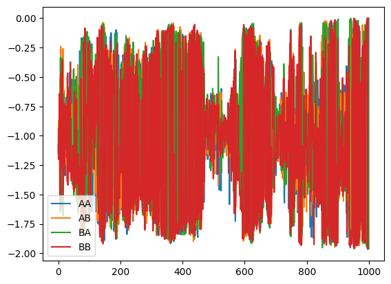
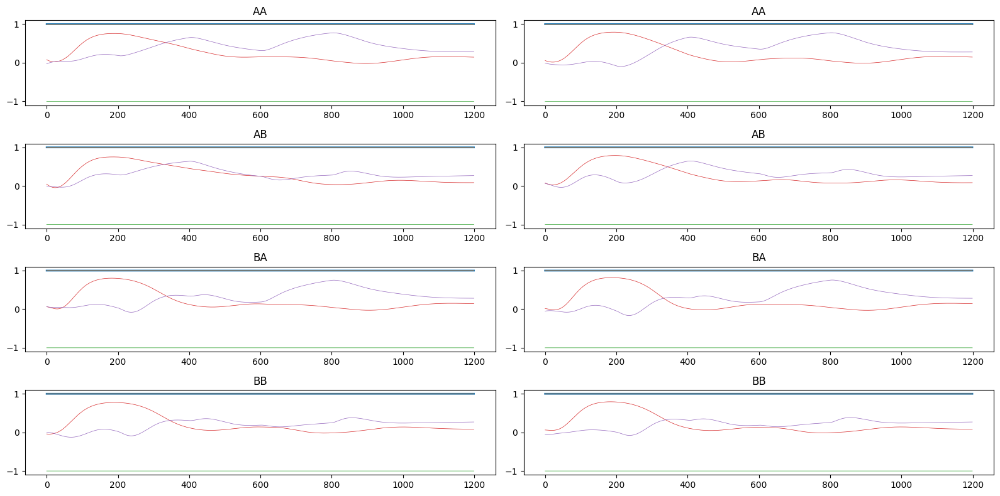

import numpy as np
import matplotlib.pyplot as plt
import water_tank as wt
from tqdm.notebook import tqdm_notebookclass Miconi(object):
dt = 1.0 # Discretization step in ms
ID_OUTPUT = 0 # Output neuron
def __init__(self,
N_in:int,
N:int,
g:float,
tau:float,
sparseness:float,
perturbation_frequency:float=3.,
perturbation_amplitude:float=16.,
alpha_mean:float=0.05,
learning_rate:float=0.5,
clip_dW:float=0.0003,
):
self.N_in = N_in
self.N = N
self.g = g
self.tau = tau
self.sparseness = sparseness
self.perturbation_frequency=perturbation_frequency
self.perturbation_amplitude=perturbation_amplitude
self.alpha_mean = alpha_mean
# Input population
self.inp = wt.StaticInput(size=self.N_in)
# Reservoir
self.rc = wt.MiconiLayer(
size=self.N,
tau=self.tau,
perturbation_frequency=perturbation_frequency,
perturbation_amplitude=perturbation_amplitude,
alpha_mean = alpha_mean,
)
# Input projection
self.inp_proj = wt.connect(
pre = self.inp,
post = self.rc,
weights = wt.Uniform(-1.0, 1.0),
bias = None,
sparseness = 0.1
)
# Recurrent projection
self.rec_proj = wt.connect(
pre = self.rc,
post = self.rc,
weights = wt.Normal(0.0, self.g/np.sqrt(self.sparseness*self.N)),
#bias = wt.Bernouilli([-1.0, 1.0], p=0.5),
sparseness = self.sparseness,
)
# Learning rules
self.learningrule = wt.MiconiLearningRule(
projection=self.rec_proj,
learning_rate=learning_rate,
clip_dW=clip_dW,
)
# Recorder
self.recorder = wt.Recorder()
def trial(self,
X:np.ndarray,
target:float,
critic:float=None,
response_duration:int=200,
training:bool=True,
record:bool=True,
):
T, _ = X.shape
# Perturbation
if training:
perturbations = np.random.geometric(
self.perturbation_frequency/1000., (T, self.N)
) == 1
# Init
self.rc.init()
# Oterate over time steps
responses = []
for t, x in enumerate(X):
# Inputs/targets
self.inp.set(x)
# Steps
self.rc.step(perturbation=perturbations[t, :] if training else None)
if training: self.learningrule.step()
# Record output neuron
if t > T - response_duration:
responses.append(self.rc.r[self.ID_OUTPUT])
# Recording
if record:
self.recorder.record({
'rc': self.rc.output(),
})
# Learning at the end of the trial
response = np.mean(responses)
reward = - np.abs(target - response)
if training: self.learningrule.train(reward=reward, critic=critic)
return rewardnet = Miconi(
N_in=2,
N=200,
g=1.5,
tau=10.0,
sparseness=1.0,
perturbation_frequency=3.,
perturbation_amplitude=16.,
alpha_mean=0.05,
learning_rate=0.5,
clip_dW=0.0003,
)/Users/vitay/.virtualenvs/reservoirpy/lib/python3.11/site-packages/scipy/sparse/_index.py:143: SparseEfficiencyWarning: Changing the sparsity structure of a csr_matrix is expensive. lil_matrix is more efficient.
self._set_arrayXarray(i, j, x)AA = np.zeros((1200, 2))
AA[200:400, 0] = 1.0
AA[600:800, 0] = 1.0
AB = np.zeros((1200, 2))
AB[200:400, 0] = 1.0
AB[600:800, 1] = 1.0
BA = np.zeros((1200, 2))
BA[200:400, 1] = 1.0
BA[600:800, 0] = 1.0
BB = np.zeros((1200, 2))
BB[200:400, 1] = 1.0
BB[600:800, 1] = 1.0## AA
reward = net.trial(X=AA, target=-0.98, training=False)
init_AA = net.recorder.get()
## AB
reward = net.trial(X=AB, target=0.98, training=False)
init_AB = net.recorder.get()
## BA
reward = net.trial(X=BA, target=0.98, training=False)
init_BA = net.recorder.get()
## BB
reward = net.trial(X=BB, target=-0.98, training=False)
init_BB = net.recorder.get()rewards = []
critic = {
'AA': -1.0,
'AB': -1.0,
'BA': -1.0,
'BB': -1.0,
}
for epoch in (t := tqdm_notebook(range(1000))):
## AA
reward_AA = net.trial(X=AA, target=-0.98, critic=critic['AA'], record=False)
critic['AA'] = 0.75 * critic['AA'] + 0.25 * reward_AA
## AB
reward_AB = net.trial(X=AB, target=0.98, critic=critic['AB'], record=False)
critic['AB'] = 0.75 * critic['AB'] + 0.25 * reward_AB
## BA
reward_BA = net.trial(X=BA, target=0.98, critic=critic['BA'], record=False)
critic['BA'] = 0.75 * critic['BA'] + 0.25 * reward_BA
## BB
reward_BB = net.trial(X=BB, target=-0.98, critic=critic['BB'], record=False)
critic['BB'] = 0.75 * critic['BB'] + 0.25 * reward_BB
rws = [reward_AA, reward_AB, reward_BA, reward_BB]
rewards.append(rws)
t.set_description(f'AA: {reward_AA:.2f} AB: {reward_AB:.2f} BA: {reward_BA:.2f} BB: {reward_BB:.2f}')## AA
reward = net.trial(X=AA, target=-0.98, training=False)
final_AA = net.recorder.get()
## AB
reward = net.trial(X=AB, target=0.98, training=False)
final_AB = net.recorder.get()
## BA
reward = net.trial(X=BA, target=0.98, training=False)
final_BA = net.recorder.get()
## BB
reward = net.trial(X=BB, target=-0.98, training=False)
final_BB = net.recorder.get()rewards = np.array(rewards)
plt.plot(rewards[:, 0], label='AA')
plt.plot(rewards[:, 1], label='AB')
plt.plot(rewards[:, 2], label='BA')
plt.plot(rewards[:, 3], label='BB')
plt.legend()
plt.figure(figsize=(16, 8))
plt.subplot(421)
plt.title("AA")
for i in range(5):
plt.plot(init_AA['rc'][:, i], lw=2 if i==0 else .5)
plt.subplot(422)
plt.title("AA")
for i in range(5):
plt.plot(final_AA['rc'][:, i], lw=2 if i==0 else .5)
plt.subplot(423)
plt.title("AB")
for i in range(5):
plt.plot(init_AB['rc'][:, i], lw=2 if i==0 else .5)
plt.subplot(424)
plt.title("AB")
for i in range(5):
plt.plot(final_AB['rc'][:, i], lw=2 if i==0 else .5)
plt.subplot(425)
plt.title("BA")
for i in range(5):
plt.plot(init_BA['rc'][:, i], lw=2 if i==0 else .5)
plt.subplot(426)
plt.title("BA")
for i in range(5):
plt.plot(final_BA['rc'][:, i], lw=2 if i==0 else .5)
plt.subplot(427)
plt.title("BB")
for i in range(5):
plt.plot(init_BB['rc'][:, i], lw=2 if i==0 else .5)
plt.subplot(428)
plt.title("BB")
for i in range(5):
plt.plot(final_BB['rc'][:, i], lw=2 if i==0 else .5)
plt.tight_layout()